作品概要
koaEngine（自作エンジン）
- 作品内容
- ゲームエンジンデモ
- 制作人数
- 1人
- 制作期間
- 約1年半 // 現在も制作中
- SDK
- DirectX12
- 外部ライブラリ
- DirectXTex
- ImGui, ImGuizmo
- Assimp
- nlohmann json
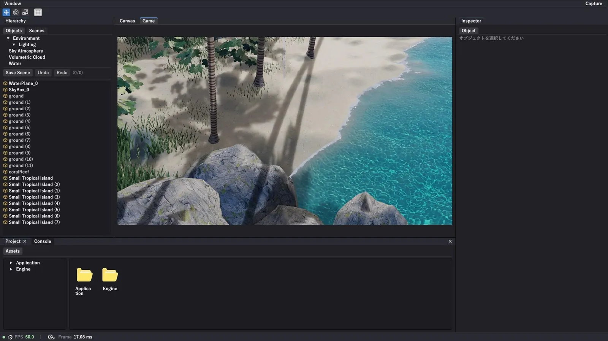
SECTION 02 ─ 就活作品紹介
自作ゲームエンジン ／ 目標：沖縄の海を自作ゲームエンジンで実装
作品概要

作品概要 / 目標
目標：沖縄の海を自作ゲームエンジンで実装
大好きな故郷、沖縄の海をゲームエンジンで再現したかったから
目指した海（沖縄の写真）
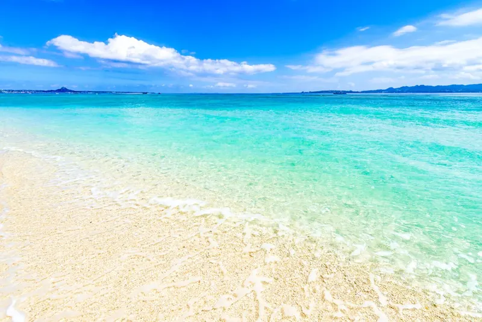
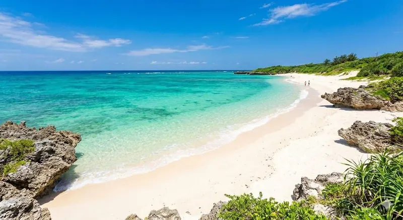
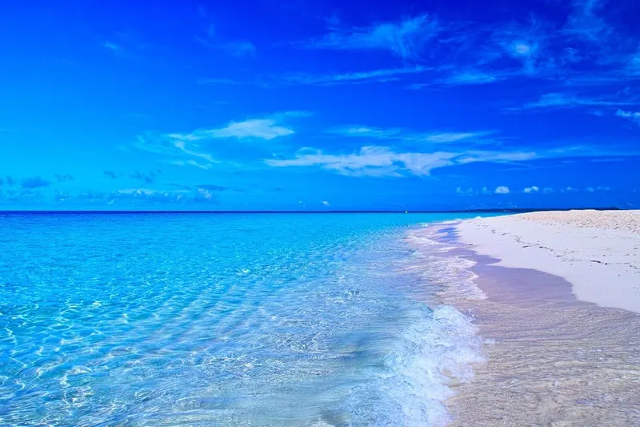
自作エンジンで再現した海
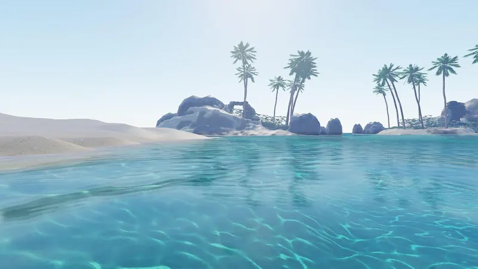
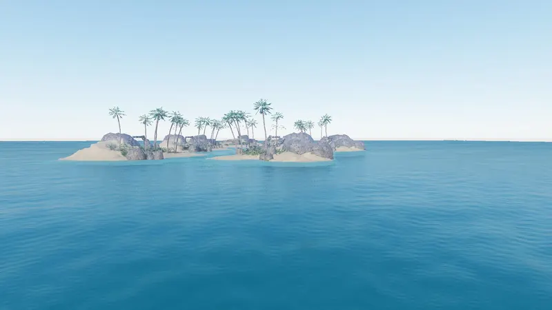
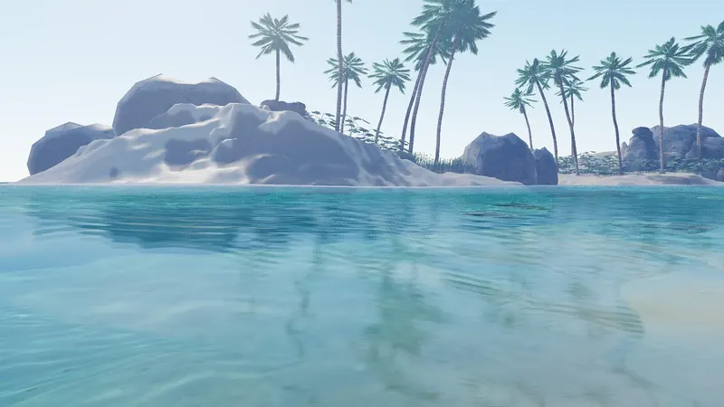
作品概要 / 基本レンダリング
海を再現するため、前提となる物理ベースレンダリングを実装しました。
Unreal Engine が公開している文献などを参考にしながら実装しました。
水の実装にてレイトレーシングで “G-Buffer” を使用するので Deferred Rendering を実装しました。
ですが水は半透明のため Forward Rendering も実装し、Deferred Rendering + Forward Rendering のハイブリッド構成にしました。
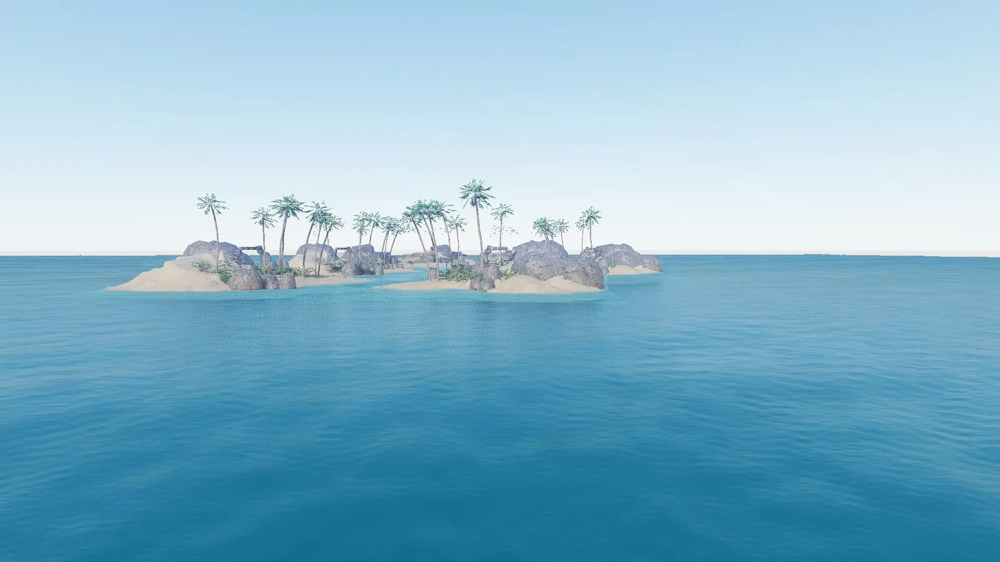
作品概要 / Water Rendering
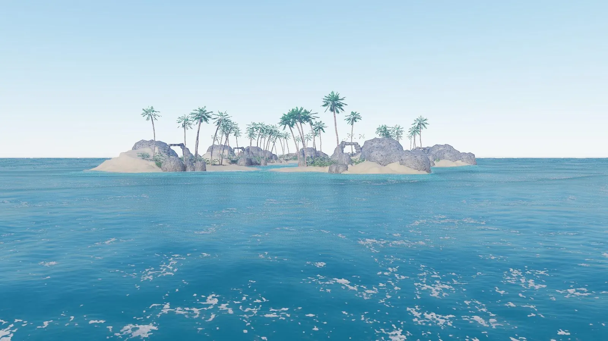
近景向けの Gerstner Wave と、大規模海面向けに GPU 上で自作した FFT Ocean を統合したハイブリッド構成を実装
詳しくは → 説明資料 p7〜p8なぜ FFT を選んだのか／既存の枠組みに自分で足した 3 点
作品概要 / Water Rendering
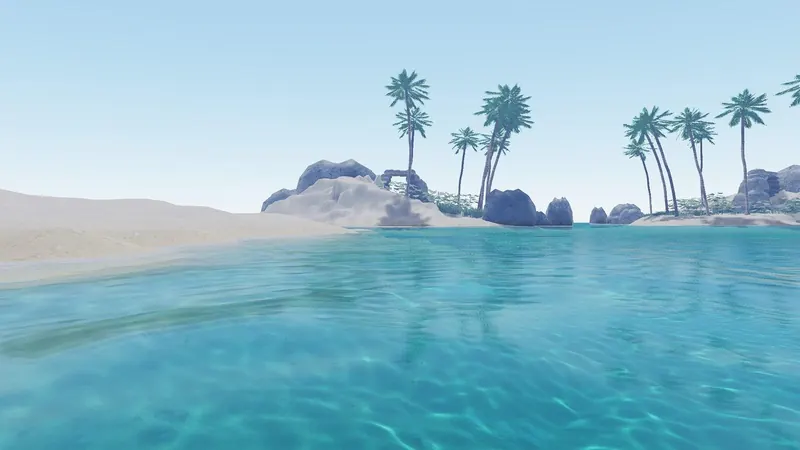
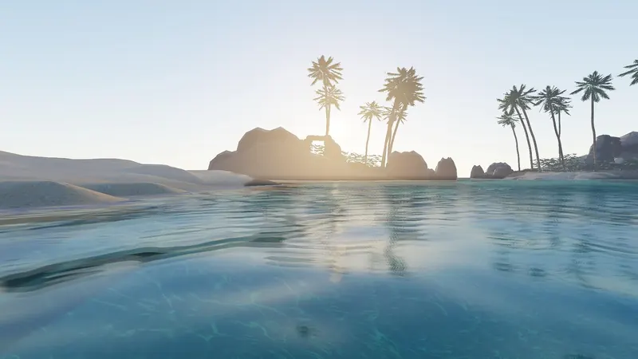
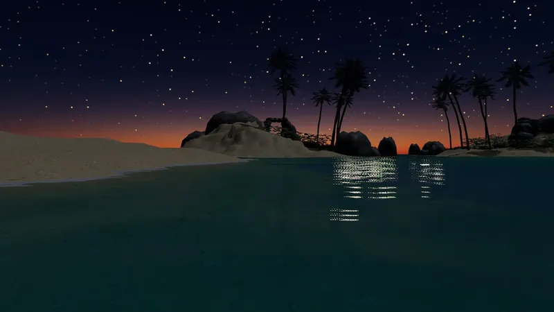
浅瀬のエメラルドから深瀬の青への変化を、色指定ではなく 水の吸収係数・散乱係数 から計算で導出
詳しくは → 説明資料 p9色を手で塗るのをやめて、水の吸収・散乱から計算するまでの話
作品概要 / Water Rendering
詳しくは → 説明資料 p10〜p11・補足A（p22）水面際が破綻した原因と、レイで情報を足した話
作品概要 / Sky Atmosphere
空の色は、レイリー／ミー散乱とオゾン吸収の積分 から生成。時刻を動かすだけで昼→夕→夜が変わります
空・雲・水面・環境光を、同じ大気散乱から供給時間帯ごとのアセットや個別調整は要りません
作品概要 / Volumetric Cloud
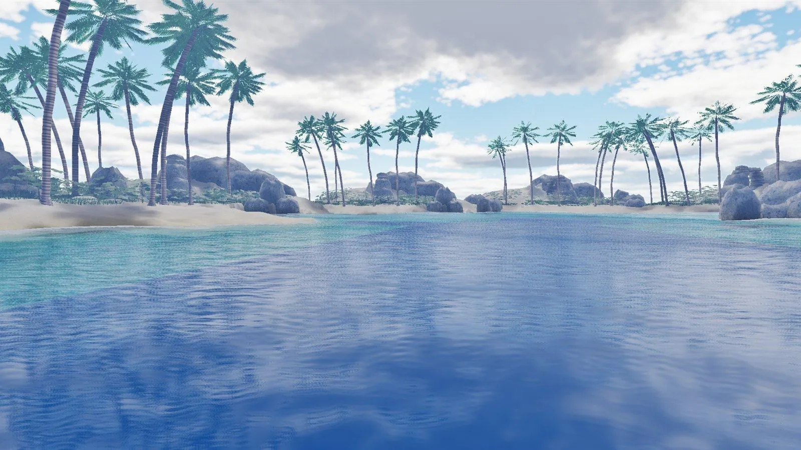
雲も空と同じ光源で積分し、水面とモデルに映り込むノイズもアセット無しで、全部エンジン内で生成